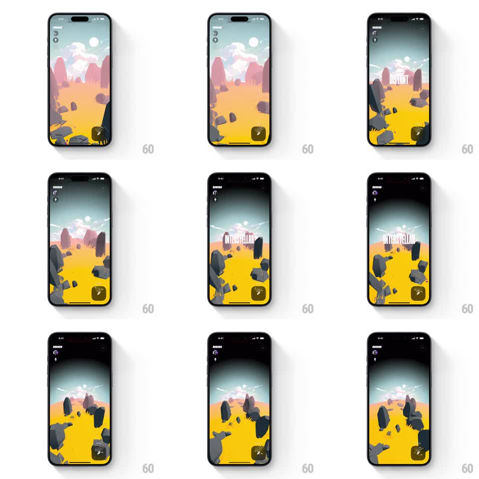

Media
Frame-by-frame

Rebuild this interaction 1:1: Not Boring Vibes' presence meter - stepping the meter morphs the desert landscape through presence states ("DISTANT", "INTERSTELLAR") with a camera drift, palette shift, and floating condensed text.

Rebuild this interaction 1:1: Not Boring Vibes' presence meter - stepping the meter morphs the desert landscape through presence states ("DISTANT", "INTERSTELLAR") with a camera drift, palette shift, and floating condensed text.
## Integration
Integration: stack-agnostic spec - springs given as stiffness/damping, timed motions as duration + curve; map every value to your framework and animation library of choice.
## Scene
The 3D desert landscape (yellow floor, dark floating rocks, teal sky). Top-left: a vertical presence meter of small pips. As the meter steps up, the scene darkens and cools, the camera drifts upward through the rocks, and a huge condensed white label ("DISTANT", then "INTERSTELLAR") floats center-screen among the rocks.
## Motion spec
Pattern: stepped state morph with floating typography.
- Tap a meter pip (or swipe the meter): the active pip lights and the meter ticks (120ms per step).
- The camera drifts forward and up (dolly ~600ms, ease-in-out), passing between floating rocks with parallax.
- The label fades up in 3D space (translateY 30px to 0, 400ms), hangs, then dissolves (300ms) as the next state loads.
- The palette re-grades continuously with the meter: saturation drops and the sky deepens to near-black at the top state (~500ms crossfade per step).
- Rocks keep their slow idle drift throughout; the morph layers on top, never freezing the scene.
## Calibration
- One state change per gesture - a single tap never skips a step.
- The label sits inside the scene's depth (rocks occlude or pass it), not on a UI layer above everything.
## Reduced motion
Camera holds; palette crossfades and label fades in place.
## Don't miss
- The transition is a grade-and-drift, not a cut - the landscape is recognizably continuous between states.
- Pip ticks carry a tiny haptic-style pop (scale 1.2 to 1.0, 120ms).